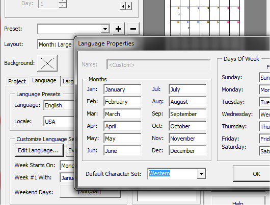
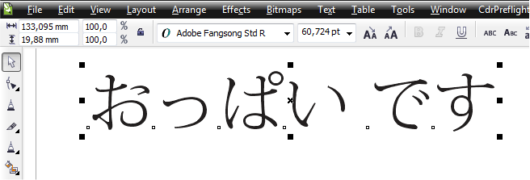

Добавление языков в CalendarWizard
sunbreeze / 06.12.2010, 18:16/00:41
Форум:
Подскажите, пожалуйста, можно ли добавить языки в макрос CalendarWizard? Конкретно нужны на данный момент польский, чешский и китайский.
Кроме того, может кто подскажет, что нужно сделать, чтобы корректно отображались буквы с "прибамбасами" (точками, крышечками над буквами и т.п.)? У меня такие буквы заменяются на кириллические. Приходится каждый раз подправлять вручную.
Заранее благодарю!
не проще ли "сгенерить" календарь с одним из встроенных в него языков, а потом вручную поменять текст на нужный? Буквы с прибамбасами можно получить нажав в Кореле Ctrl-F11 и выбрав нужную кодовую страницу из списка. После этого в режиме ввода текста дважды клацаете на нужный символ с точками и крышечками.
sunbreeze, это не помогает?

Спасибо, Sancho, такого нет в X3. Вы ссылаетесь на какую версию Корела?
Добавлено (06.12.2010, 21:00)
---------------------------------------------
shark, если бы так было проще с китайским, то не задавала бы здесь таких вопросов.
А нужные символы я именно тем способом, что Вы приводите, и подставляю. Нет-нет, да и пропустишь чего-нибудь, поэтому и хочется избегать таких ошибок, полагаясь только на программу.
sunbreeze, тут не в версии корела дело. Это расширенная платная версия макроса (та что в кореле является урезанной).
Собственно в соседней теме я давал ссылку.
http://www.oberonplace.com/vba/drawmacros/index.htm
Прошу прощение, нашла я дополнительные настройки для языка в X3 (кнопка New). Но не получилось вставить именно те самые необычные необычные символы. Игнорируются знаки ударения, крышки...
Но, спасибо, теперь знаю как добавлять другие языки. Правда, с китайским всё намного сложнее: цифры они пишут тоже иероглифами. Да и Корел не поддерживает азиатские шрифты.
Добавлено (06.12.2010, 21:30)
---------------------------------------------
Sancho, за ссылку спасибо. Посмотрю, что там нового есть в этом самом макросе.
С каких это пор? )))

У меня почему то поддерживает ))))
Sancho, по крайней мере этот макрос категорически не поддерживает то, что мне нужно.
Добавлено (06.12.2010, 21:44)
---------------------------------------------
Скачала и установила Calendar Wizard 4.1. Там та же история. Не получается отредактировать нужные мне буквы. Например, во французском февраль -- Février. Макрос печатает Fevrier. И так с другими символами.
Добавлено (06.12.2010, 21:46)
---------------------------------------------
Но не урезанный макрос очень понравился. Thanks!
Добавлено (06.12.2010, 22:00)
---------------------------------------------
Хотела уточнить, что в Edit Language ввожу в соответствующей графе месяца нужный мне символ и он, вроде как, отображается, но при печати выводится то, что описывала выше: вместо é -- e, вместо û -- u и т.д.
Добавлено (06.12.2010, 22:10)
---------------------------------------------
Возможно, дело в именно в руссифицированности моего Корела?... Если у кого-то Корел стоит без руссификации, не может ли этот кто-то проверить, как у него дела обстоят с выводом необычных символов (например, на французском языке: там такие символы в феврале, августе и декабре)?
Буду очень благодарна!
И ещё вопрос: кто-нибудь знает можно ли экспортировать свои стили форматирования для календарей в урезанной версии макроса?
Выбираю Французский из списка языков в макросе, генерирую и всё работает — буквы какие нужно.
Спасибо! Значит пришло время ставить программу без руссификации.
sunbreeze, ну если делать нечего, то в путь )))
Страницы